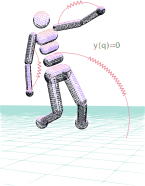
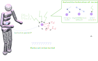
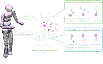
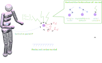
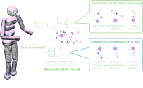
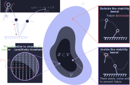
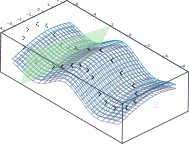
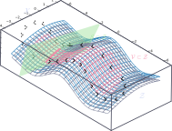
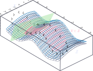
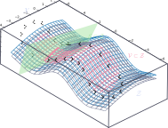

- Yeadon, Maurice R. "Aerial movement." Biomechanics in sport: performance enhancement and injury prevention (2000): 273-283.
- Chen, Yu-Ming. Toward High-Performance Simple Models of Legged Locomotion. Diss. University of Pennsylvania, 2023.
- Tassa, Yuval, Tom Erez, and Emanuel Todorov. "Synthesis and stabilization of complex behaviors through online trajectory optimization." 2012 IEEE/RSJ International Conference on Intelligent Robots and Systems. IEEE, 2012.
- Radosavovic, I., Xiao, T., Zhang, B., Darrell, T., Malik, J., & Sreenath, K. (2024). Real-world humanoid locomotion with reinforcement learning. Science robotics, 9(89).
- E. R. Westervelt, J. W. Grizzle and D. E. Koditschek, "Hybrid zero dynamics of planar biped walkers," in IEEE Transactions on Automatic Control, vol. 48, no. 1, pp. 42-56, Jan. 2003
- Griffin B, Grizzle J. Nonholonomic virtual constraints and gait optimization for robust walking control. The International Journal of Robotics Research. 2017
- Saranli, U., Arslan, Ö., Ankarali, M.M. et al. Approximate analytic solutions to non-symmetric stance trajectories of the passive Spring-Loaded Inverted Pendulum with damping. Nonlinear Dyn 62, 729-742 (2010).
- S. Le Cleac'h et al., "Fast Contact-Implicit Model Predictive Control," in IEEE Transactions on Robotics, vol. 40, pp. 1617-1629, 2024
- Jallet, W., Bambade, A., Arlaud, E., El-Kazdadi, S., Mansard, N., & Carpentier, J. (2025). Proxddp: Proximal constrained trajectory optimization. IEEE Transactions on Robotics.
- Spong, M. W. (1999). Passivity based control of the compass gait biped. IFAC Proceedings Volumes, 32(2), 506-510.
- I. Poulakakis and J. W. Grizzle, "The Spring Loaded Inverted Pendulum as the Hybrid Zero Dynamics of an Asymmetric Hopper," in IEEE Transactions on Automatic Control, vol. 54, no. 8, pp. 1779-1793, Aug. 2009
Using intrinsic dynamics to generate and control agile motions in legged robots
Gabin Lembrez

Motivations
Biped locomotion from the perspective of living organisms:
- Fluid and agile motions
- Use of couplings (Yeadon, 2000)
- Leveraging all the dynamic effects
How well does it transfer to robotics?


State of the art
- Simple models: template control, ZMP control (Chen 2023)
- Online trajectory optimization and MPC (Tassa et al. 2012 )
- Limit cycle optimization with virtual constraints ( Westervelt et al. 2003)
- Reinforcement learning (PPO - TRPO) (Radosavovic et al., 2024 )

How to use the intrinsic dynamics to execute the next step ?
- How to reduce the order of the model without losing rich dynamic effects ?
- How to operate the reduced order model safely ?
 




Viability kernel
Definition
The viability kernel $\mathcal{V}$ is the set of states from which there exists a strategy to avoid a set set of failure states $\mathcal{F}$ (Wieber, 2008).
\[ \begin{align} \mathcal{F} &= \left\{ x\in\mathcal{X} \; | \; \textit{The robot has fallen} \; \right\} \\ \mathcal{V} &= \left\{ x(0)\in\mathcal{X} \; | \; \forall t>0, \exists u(t)\in\mathcal{U}: x(t)\notin \mathcal{F} \right\} \end{align} \]


Approximation of stance dynamics
Under reasonable assumptions, stance dynamics is approximated by integrable spring-mass-damper dynamics (Saranli et al., 2010).
\[
\begin{align}
r(t) &= Me^{-\xi\omega_0 t}\cos(\omega_d t + \phi) \\
\theta(t) &= \alpha + \beta t + \gamma e^{-\xi\omega_0 t}\cos(\omega_d t + \psi)
\end{align}
\]
The height of the next jump can be estimated.
Viability-based control
- Accomodates real-time user inputs
- Enables high speed hopping
- Quantitative robustness margin.

 


Extension with virtual constraints
Goal : Constrain the system to exist on a restricted space using partial feedback linearization ( Westervelt et al., 2003 - Griffin et al., 2017 )
The zero-dynamics manifold associated with holonomic constraint $y(q)=0$
\[
\mathcal{Z} = \left\{ x\in T\mathcal{Q} \; | \; y(q) = 0,\; \dot y (q,\dot q) = 0 \right\}
\]
Feedback linearization controller:
\[
u = \left( L_gL_fy \right)^{-1} \left( v - L^2_f y \right)
\]
Touch-down and lift-off occur when crossing the impact surface: $\mathcal{S}$. The hybrid zero-dynamics condition:
\[
\mathcal{Z} \subset \mathcal{S} \cap \mathcal{Z}
\]
Parametrize the constraints to find a periodic limit-cycle which minimizes
\[
\frac{1}{d} \int_0^T u^2 dt = \frac{energy}{distance}
\]
Subject to the hybrid condition and constraints on the actuators.
Parametrize the constraints to find a periodic limit-cycle which minimizes
\[
\frac{1}{d} \int_0^T u^2 dt = \frac{energy}{distance}
\]
Subject to the hybrid condition and constraints on the actuators.
My Proposition:
- Find constraints with good dynamic behavior
- Control the actuated zero dynamics to maintain viability
References
Inverted pendulum viability
The initial state $(\theta_0,\dot\theta_0)$ is viable if no angle $\bar \theta \in [0;\pi/2]$ is solution of:
\[ mgl \sin\bar\theta = E_0 + \bar u (\bar\theta - \theta_0) \]
Inverted pendulum viability

Theorem :
$x=(\theta,\dot{\theta})\in \mathcal{V} $ if one of the following condition is met:- $\dot{\theta}>0$ and $\bar{u}>1$
- $\dot{\theta}<0$ and $\bar{u}\theta > \frac{l}{2g}\dot{\theta}^2+\sin\theta$
- $\dot{\theta}>0$, $\bar{u}<1$ and $\arccos(\bar{u})<\theta$
- $\dot{\theta}<0$, $\bar{u}<1$ and $\arccos(\bar{u})>\theta$
- $\bar{u}<1$, $sign(\dot{\theta})\arccos(\bar{u}) < sign(\dot{\theta})\theta$ aria-expanded="" \[ \bar{u} > \frac{\sqrt{1-\bar{u}^2}-\frac{l}{2g}\dot{\theta}^2 - \sin\theta}{\arccos (\bar{u})- \theta} \]